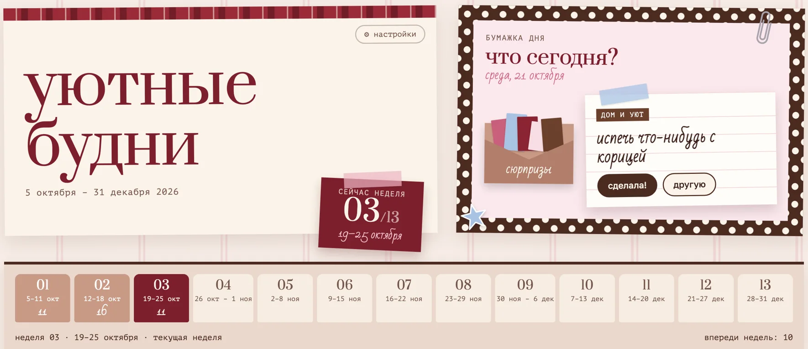
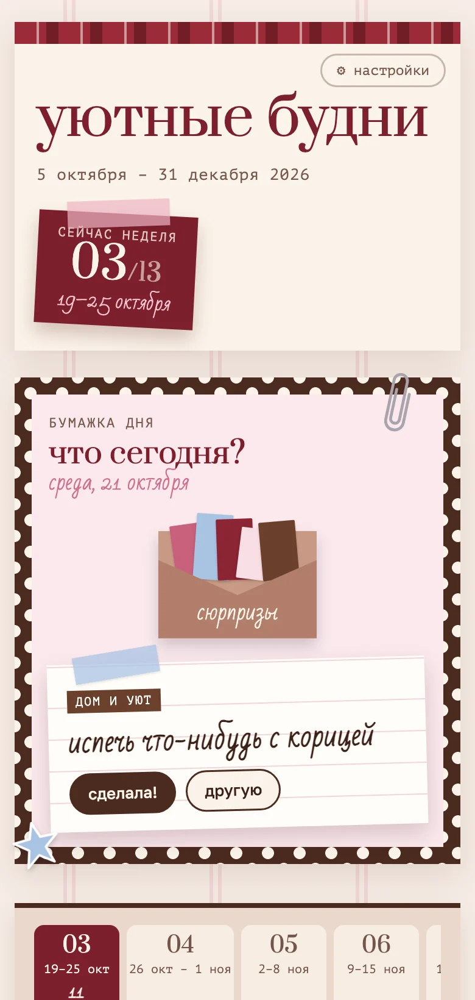
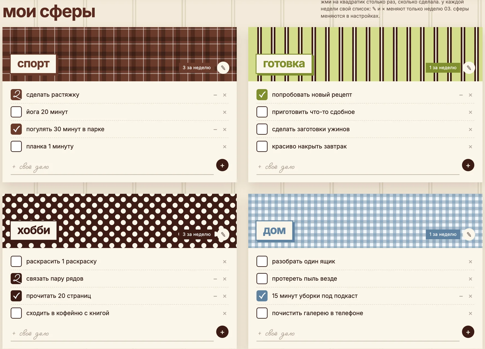
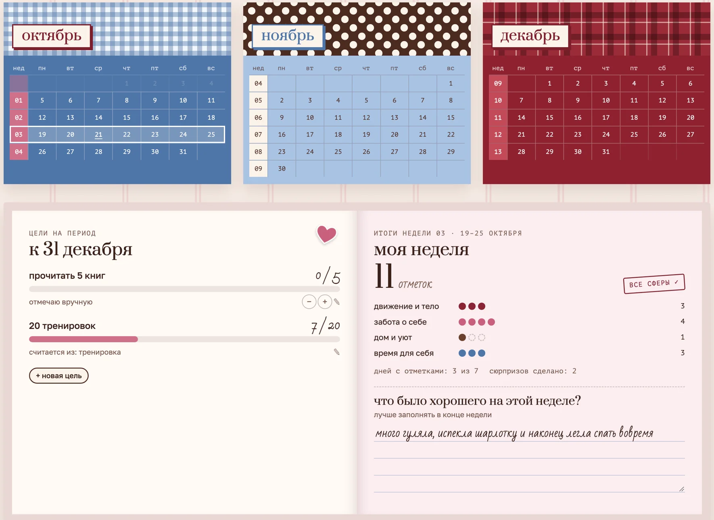
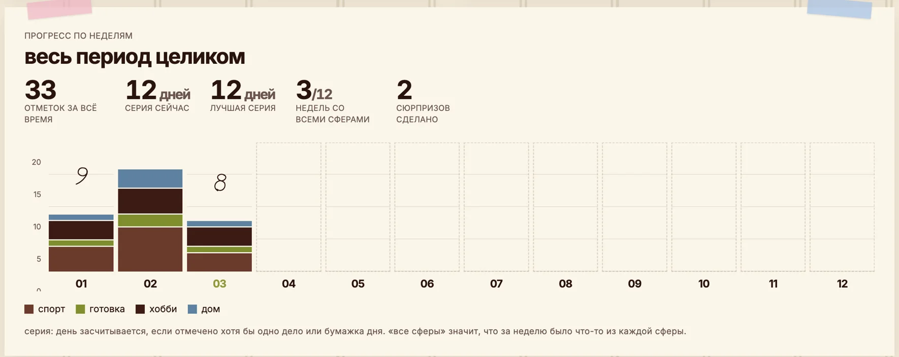
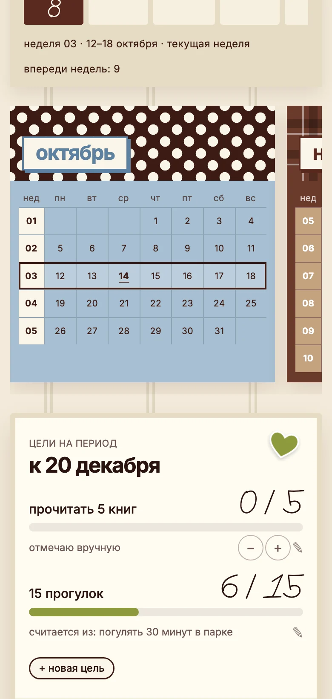

01
сферы жизни
движение, забота о себе, дом, время для себя или твои. сферы можно переименовать, добавить и убрать.
все твои дела, разложенные по сферам жизни. отмечаешь, что успела, вытягиваешь бумажку дня и видишь, как складывается неделя.


дела никуда не деваются, их просто не видно. трекер собирает их перед глазами.
трекер собран как личный блокнот: полоска, клетка, горошек, наклейки. только он не теряется и всегда под рукой.
движение, забота о себе, дом, время для себя или твои. сферы можно переименовать, добавить и убрать.
у каждой недели свой список. одно дело можно отметить хоть пять раз, например тренировки или чтение.
утром вытягиваешь бумажку с маленькой идеей на сегодня. не нужно думать, с чего начать.
«прочитать 5 книг» или «20 тренировок». считаются сами из отмеченных дел или вручную.
сколько сделано по каждой сфере и один вопрос в конце: что было хорошего на этой неделе?
график по неделям, серия дней подряд и недели, где было что-то из каждой сферы.




в директ слово «трекер». расскажу детали и отвечу на вопросы.
после оплаты добавляю твою почту в список доступа.
открываешь ссылку, входишь со своей почтой и пользуешься. твои записи видишь только ты.
я веб-дизайнер. у меня работа, блог, щенок рэм, учёба на кинолога и куча хобби. всё это долго жило в голове и в заметках, пока я не собрала себе трекер.
показала его в рилс, и мне начали писать: хочу такой же. так он и стал продуктом. я слежу, чтобы он был удобным и красивым, и дорабатываю по отзывам.
нет. трекер открывается по ссылке в браузере, как сайт. на телефоне его можно добавить на экран «домой», и он будет как приложение.
да. входишь по своей почте, и записи будут одни и те же на всех устройствах.
да. дела добавляешь, переименовываешь и удаляешь сама. сферы тоже можно переименовать, добавить или убрать.
даты начала и конца выбираешь сама в настройках. трекер перестроится под них.
ничего страшного. трекер не ругает. просто открываешь следующую неделю и продолжаешь.
только ты. у каждого свой вход по почте, и чужие записи никому не видны.
напиши мне в директ слово трекер, и я всё расскажу
написать в директ